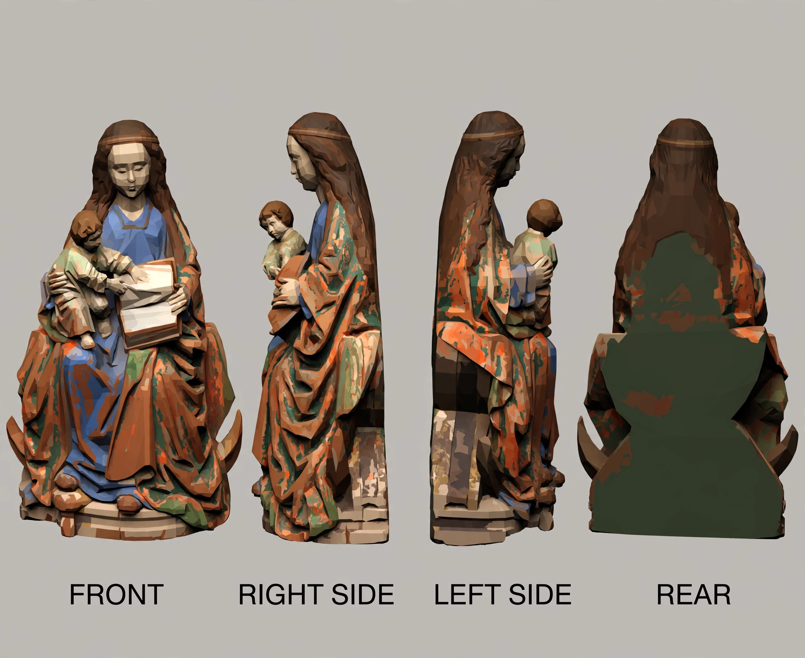
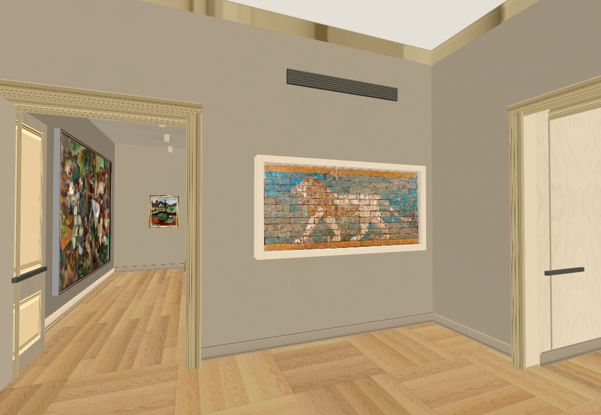
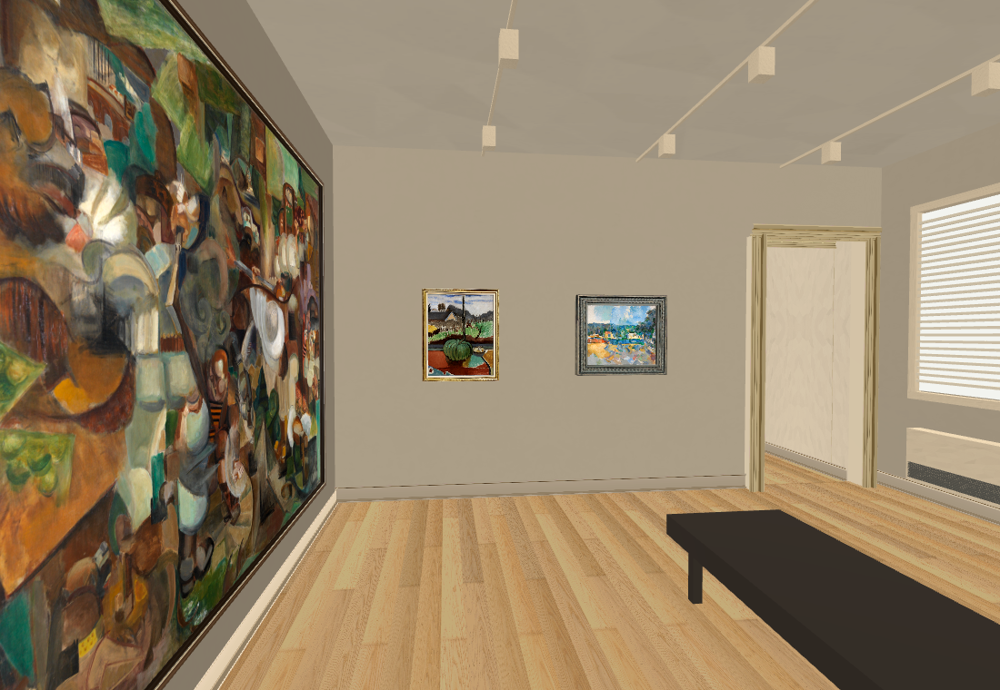
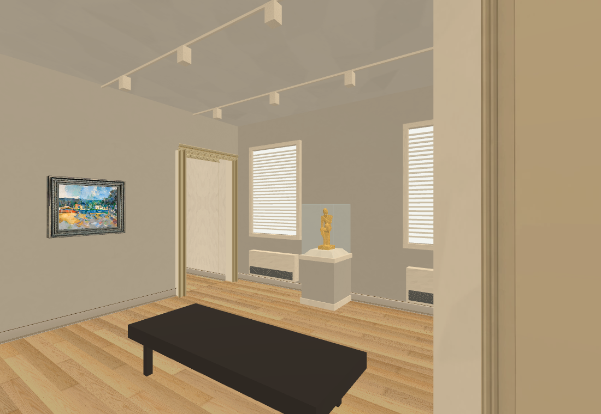

October 1, 2026, 13:37 UTC. Native screenshots from the actual Collection factory, with the original Hall, controls, character, frame, clock, tabs and shaders. Local preview only; production main build is unchanged.
Correction: v47/v48 used a stale stripped Main Hall. This experiment uses build/v0.1.0 at 317b8f3 and verifies all 362 Hall source files unchanged.
Modern gallery BEFORE the wide-angle layout correction. Opus is correcting this arrangement.
Modern interior correction — native trial
13:52 UTC. The two-window wall, sculpture case and five-painting arrangement now follow the video pan. These native views are unbaked. The landing connection is still wrong: independent wides show perpendicular medieval and modern doorway walls, and that junction is being corrected next.
Second doorway next to Cézanne, at the window-wall corner.
Headless adapter checks retain the Hall controls and complete a 19-leg traversal. 78/87 older collision trials agree; nine discrepancies remain, including the native portal posts and far vestibule. This does not establish complete physical connectivity.
Native full-app capture passed on software rendering. RTX rendering has also failed with antialiasing disabled; the GPU issue remains unresolved. No new browser build is verified. Added rooms still need a separate bake.
Opus completed the main-build adapter, oval-frame correction, sculpture trial and source-based modern-layout review. The modern interior correction is implemented. Three Opus workers now refine the landing and medieval door axis, measure the grey connector register, and identify medieval case contents. One additional Muse bronze surface cost $0.01; total reconstruction spend is $0.85 actual / $0.86 conservative. Sculpture rear and room metres remain provisional.
Repository checks pass. Owning Shell playtest: 46/50 with four recorded existing failures.
Ten-video audit — October 1, 14:10 UTC
The independent reviewer inspected 875 sampled frames across all ten videos. Confirmed fixes still underway: modern and medieval doors meet at a corner; medieval doors should align; the purple connector enters the grey gallery at its corner. Exact room dimensions and complete object coverage remain unresolved.
Four strong catalogue matches, three probable matches, and two unidentified works on paper. New case objects are not yet installed. Root review · Full raw review
New Muse reference: Virgin and Child15.108

One OpenRouter Muse output, $0.01. Front and sides inspected against RISD photographs; rear detail partly inferred. Reference sheet only; mesh, placement and fidelity not yet accepted. Recorded total $0.86 actual / $0.87 conservative.
Corrected landing — fresh native views
1October, before the new addition light bake. Doorway corner and lion wall now follow the filmed pan. Exact room dimensions, stair shape and missing wall text remain unaccepted.



15:00 UTC — floor fix, Hall preservation, case models
Actual full-app trial: source-wound floors now lit; Main Hall unchanged in matched east/west views. New Muse Queens front/boat modelling sheet inspected; invented floral rear rejected. $0.87 actual / $0.88 conservative total. Owning Shell rerun42/50,8 failures recorded. New bake/browser pending; old playable remains earlier v47.
Verified RISD floor5 map, original museum photographs and catalogue records, and Nintendo museum footage. Opus identified the emblem book as RISD2023.17; two paper matches remain probable. Source-driven door/trim, black connector wall and column-beam fixes are now implemented and checked. Addition-only lighting bake and independent fresh visual review are underway.